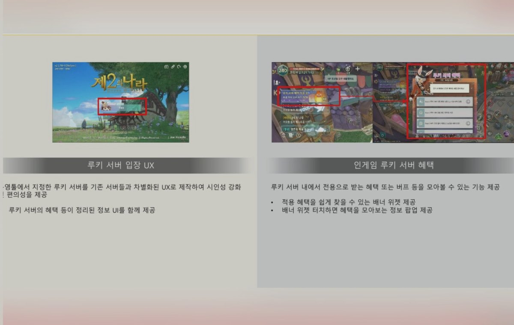
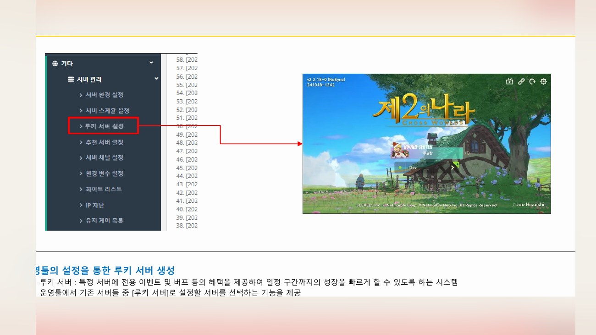
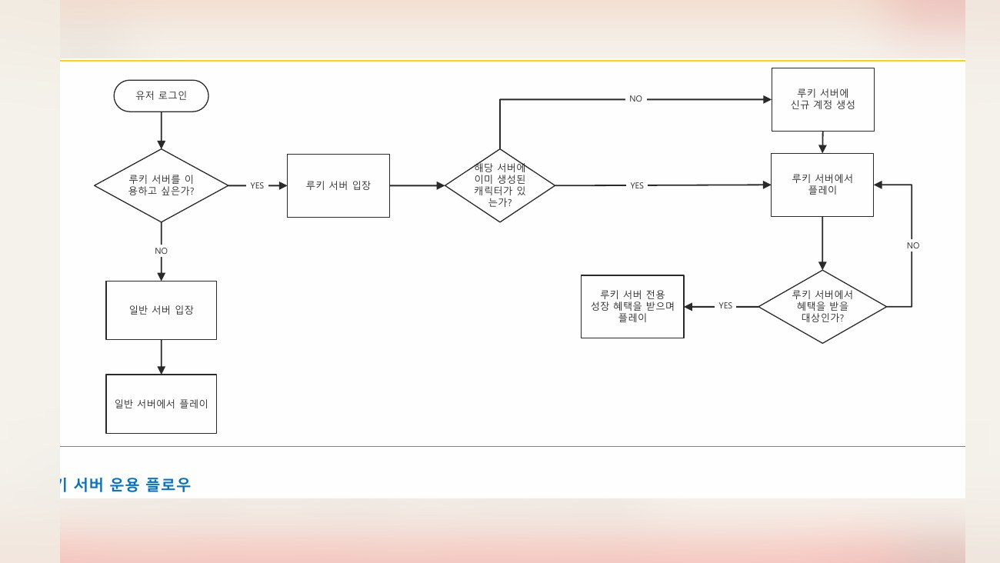
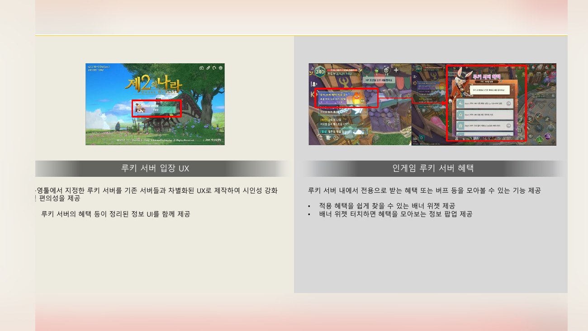
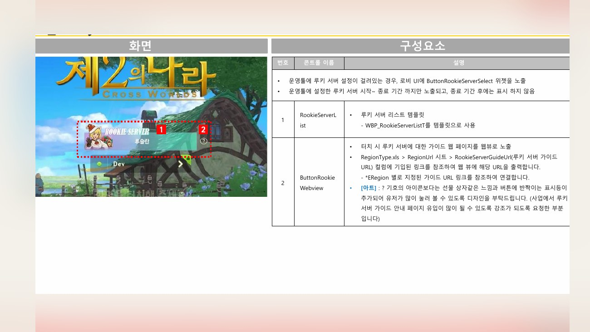
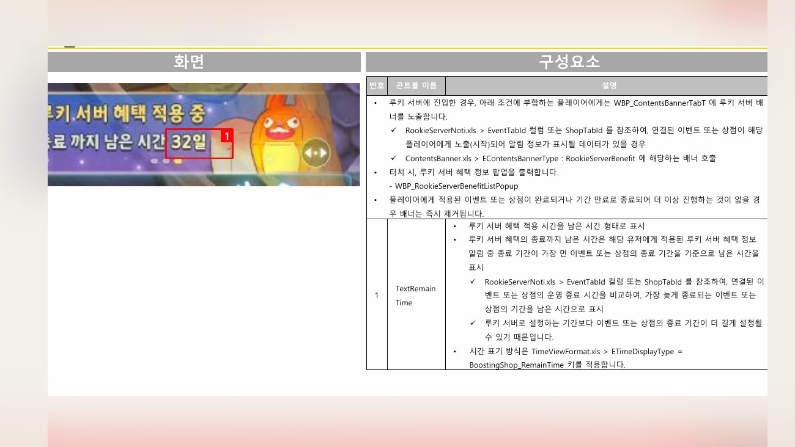
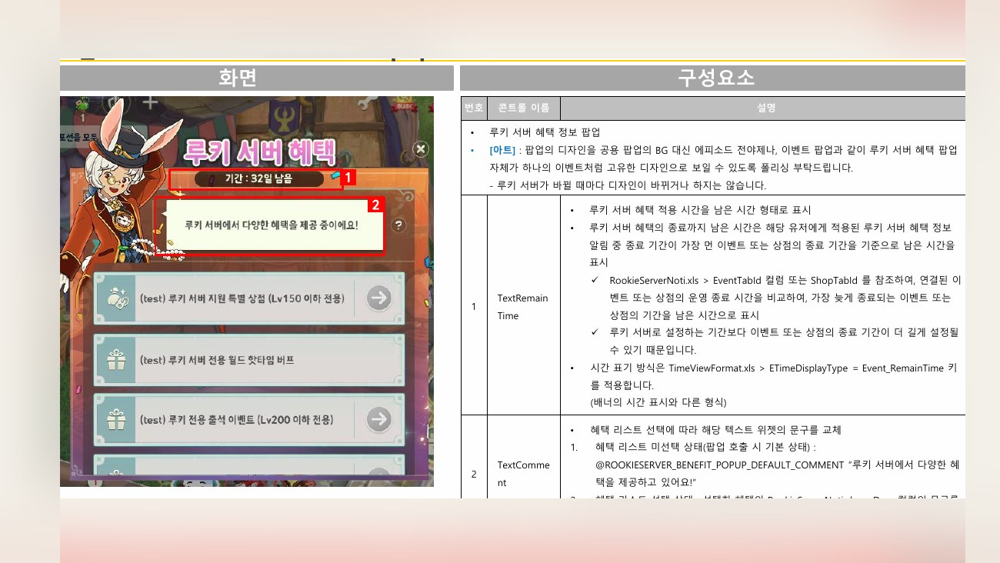
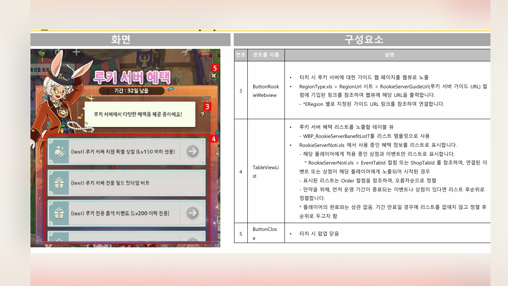
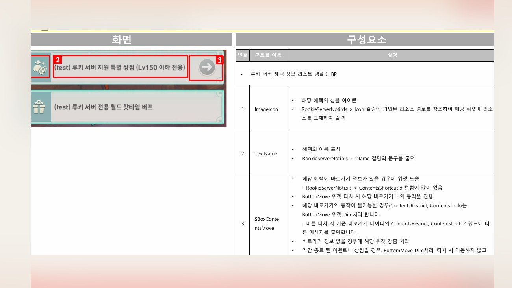
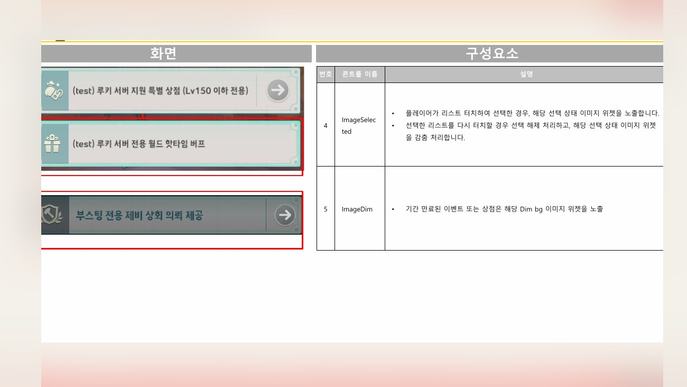

Planning Context
어떤 기획이었나
- 루키 서버는 신규/복귀 유저에게 혜택과 제한 조건을 동시에 설명해야 하는 시스템입니다.
- 서버 선택 단계에서 유저가 왜 루키 서버를 선택해야 하는지, 어떤 혜택이 있는지 빠르게 이해해야 합니다.
ProjectN · Server UX
루키 서버의 진입 조건, 혜택, 서버 선택, 성장 지원 구조를 정리한 시스템 UX 사례입니다.

Planning Context
Process
Deliverables
Result
신규/복귀 유저가 서버 선택 단계에서 혜택과 조건을 빠르게 이해할 수 있도록 루키 서버 UX를 정리했습니다.
Deliverable Captures
원본 문서는 포함하지 않고, 포트폴리오 확인용으로 일부 페이지만 이미지화했습니다. 슬라이드 마스터/상하단 영역은 흐림 처리했습니다.








